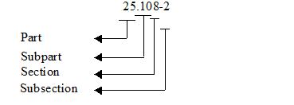

(a)General. The FAR is divided into subchapters, parts (each of which covers a separate aspect of acquisition), subparts, sections, and subsections.
(b)
Numbering.
(1)
The numbering system permits the discrete identification of every FAR paragraph. The digits to the left of the decimal point represent the part number. The numbers to the right of the decimal point and to the left of the dash represent, in order, the subpart (one or two digits), and the section (two digits). The number to the right of the dash represents the subsection. Subdivisions may be used at the section and subsection level to identify individual paragraphs. The following example illustrates the make-up of a FAR number citation (note that subchapters are not used with citations):

(2)
Subdivisions below the section or subsection level consist of parenthetical alpha numerics using the following sequence:
(a)(1)(i)(A)(1)(i)
(c)
References and citations.
(1)
Unless otherwise stated, cross-references indicate parts, subparts, sections, subsections, paragraphs, subparagraphs, or subdivisions of this regulation.
(2)
This regulation may be referred to as the Federal Acquisition Regulation or the FAR.
(3)
Using the FAR coverage at 9.106-4(d) as a typical illustration, reference to the–
(i)
Part would be “FAR part 9” outside the FAR and “part9” within the FAR.
(ii)
Subpart would be “FAR subpart 9.1” outside the FAR and “subpart 9.1” within the FAR.
(iii)
Section would be “FAR 9.106” outside the FAR and “9.106” within the FAR.
(iv)
Subsection would be “FAR 9.106-4” outside the FAR and “9.106-4” within the FAR.
(v)
Paragraph would be “FAR 9.106-4(d)” outside the FAR and “9.106-4(d)” within the FAR.
(4)
Citations of authority (e.g., statutes or Executive orders) in the FAR shall follow the Federal Register form guides.